Assessing_combining_technical_replicates
Lauren Blake
January 9, 2017
This script is to assess the impact of combining technical replicates: taking the average of the log2(CPM) of the technical replicates or taking the sum of the technical replicates prior to normalization.
# Load libraries
library("ggplot2")## Warning: package 'ggplot2' was built under R version 3.2.4source("~/Desktop/Endoderm_TC/ashlar-trial/analysis/chunk-options.R")## Warning: package 'knitr' was built under R version 3.2.5library("RColorBrewer")
library("edgeR")## Warning: package 'edgeR' was built under R version 3.2.4## Loading required package: limma## Warning: package 'limma' was built under R version 3.2.4library("limma")
# Load colors
pal <- c(brewer.pal(9, "Set1"), brewer.pal(8, "Set2"), brewer.pal(12, "Set3"))
# Load cpm data
cpm_cyclicloess <- read.table("~/Desktop/Endoderm_TC/ashlar-trial/data/cpm_cyclicloess.txt")
dim(cpm_cyclicloess)## [1] 10304 63# Load count data
gene_counts_combined_raw_data <- read.delim("~/Desktop/Endoderm_TC/gene_counts_combined.txt")
counts_genes <- gene_counts_combined_raw_data[1:30030,2:65]
rownames(counts_genes) <- gene_counts_combined_raw_data[1:30030,1]Method #1: When 2 technical replicates, take the average log2(CPM)
# Take the mean of the technical replicates when available
# Day 0 technical replicates
D0_28815 <- as.data.frame(apply(cpm_cyclicloess[,5:6], 1, mean))
D0_3647 <- as.data.frame(apply(cpm_cyclicloess[,8:9], 1, mean))
D0_3649 <- as.data.frame(apply(cpm_cyclicloess[,10:11], 1, mean))
D0_40300 <- as.data.frame(apply(cpm_cyclicloess[,12:13], 1, mean))
D0_4955 <- as.data.frame(apply(cpm_cyclicloess[,14:15], 1, mean))
# Day 1 technical replicates
D1_20157 <- as.data.frame(apply(cpm_cyclicloess[,16:17], 1, mean))
D1_28815 <- as.data.frame(apply(cpm_cyclicloess[,21:22], 1, mean))
D1_3647 <- as.data.frame(apply(cpm_cyclicloess[,24:25], 1, mean))
D1_3649 <- as.data.frame(apply(cpm_cyclicloess[,26:27], 1, mean))
D1_40300 <- as.data.frame(apply(cpm_cyclicloess[,28:29], 1, mean))
D1_4955 <- as.data.frame(apply(cpm_cyclicloess[,30:31], 1, mean))
# Day 2 technical replicates
D2_20157 <- as.data.frame(apply(cpm_cyclicloess[,32:33], 1, mean))
D2_28815 <- as.data.frame(apply(cpm_cyclicloess[,37:38], 1, mean))
D2_3647 <- as.data.frame(apply(cpm_cyclicloess[,40:41], 1, mean))
D2_3649 <- as.data.frame(apply(cpm_cyclicloess[,42:43], 1, mean))
D2_40300 <- as.data.frame(apply(cpm_cyclicloess[,44:45], 1, mean))
D2_4955 <- as.data.frame(apply(cpm_cyclicloess[,46:47], 1, mean))
# Day 3 technical replicates
D3_20157 <- as.data.frame(apply(cpm_cyclicloess[,48:49], 1, mean))
D3_28815 <- as.data.frame(apply(cpm_cyclicloess[,53:54], 1, mean))
D3_3647 <- as.data.frame(apply(cpm_cyclicloess[,56:57], 1, mean))
D3_3649 <- as.data.frame(apply(cpm_cyclicloess[,58:59], 1, mean))
D3_40300 <- as.data.frame(apply(cpm_cyclicloess[,60:61], 1, mean))
D3_4955 <- as.data.frame(apply(cpm_cyclicloess[,62:63], 1, mean))
# Create a new data frame with all of the combined technical replicates
mean_tech_reps <- cbind(cpm_cyclicloess[,1:4], D0_28815, cpm_cyclicloess[,7], D0_3647, D0_3649, D0_40300, D0_4955, D1_20157, cpm_cyclicloess[,18:20], D1_28815, cpm_cyclicloess[,23], D1_3647, D1_3649, D1_40300, D1_4955, D2_20157, cpm_cyclicloess[,34:36], D2_28815, cpm_cyclicloess[,39], D2_3647, D2_3649, D2_40300, D2_4955, D3_20157, cpm_cyclicloess[,50:52], D3_28815, cpm_cyclicloess[,55], D3_3647, D3_3649, D3_40300, D3_4955)
colnames(mean_tech_reps) <- c("D0_20157", "D0_20961", "D0_21792", "D0_28162", "D0_28815", "D0_29089", "D0_3647", "D0_3649", "D0_40300", "D0_4955", "D1_20157", "D1_20961", "D1_21792", "D1_28162", "D1_28815", "D1_29089", "D1_3647", "D1_3649", "D1_40300", "D1_4955", "D2_20157", "D2_20961", "D2_21792", "D2_28162", "D2_28815", "D2_29089", "D2_3647", "D2_3649", "D2_40300", "D2_4955", "D3_20157", "D3_20961", "D3_21792", "D3_28162", "D3_28815", "D3_29089", "D3_3647", "D3_3649", "D3_40300", "D3_4955")
dim(mean_tech_reps)[1] 10304 40# Make a column for which are averaged or not
# Find the technical factors for the biological replicates (no technical replicates)
bio_rep_samplefactors <- read.delim("~/Desktop/Endoderm_TC/ashlar-trial/data/samplefactors-filtered.txt", stringsAsFactors=FALSE)
day <- bio_rep_samplefactors$Day
species <- bio_rep_samplefactors$Species
# Setup matrix
mean_tech_reps_matrix <- as.matrix(mean_tech_reps, nrow=10304, ncol = 40)
mean_tech_reps_matrix[1:10304,1:40] = as.numeric(as.character(mean_tech_reps_matrix[1:10304,1:40]))
colnames(mean_tech_reps_matrix) <- colnames(mean_tech_reps)
rownames(mean_tech_reps_matrix) <- rownames(mean_tech_reps)
#write.table(mean_tech_reps_matrix, "~/Desktop/Endoderm_TC/ashlar-trial/data/cpm_cyclicloess_40.txt", sep="\t")
# Make PCA plots with the factors colored by day
cpm_cyclicloess_40 <- read.delim("~/Desktop/Endoderm_TC/ashlar-trial/data/cpm_cyclicloess_40.txt")
pca_genes <- prcomp(t(cpm_cyclicloess_40), scale = T, retx = TRUE, center = TRUE)
matrixpca <- pca_genes$x
pc1 <- matrixpca[,1]
pc2 <- matrixpca[,2]
pc3 <- matrixpca[,3]
pc4 <- matrixpca[,4]
pc5 <- matrixpca[,5]
pcs <- data.frame(pc1, pc2, pc3, pc4, pc5)
summary <- summary(pca_genes)
#dev.off()
averaged_status <- c(1,1,1,1,2,1,3,3,3,3,2,1,1,1,2,1,3,3,3,3,2,1,1,1,2,1,3,3,3,3,2,1,1,1,2,1,3,3,3,3)
ggplot(data=pcs, aes(x=pc1, y=pc2, color=as.factor(day), shape=as.factor(averaged_status), size=2)) + geom_point(aes(colour = as.factor(day))) + scale_colour_manual(name="Day",
values = c("0"=rgb(239/255, 110/255, 99/255, 1), "1"= rgb(0/255, 180/255, 81/255, 1), "2"=rgb(0/255, 177/255, 219/255, 1),
"3"=rgb(199/255, 124/255, 255/255,1))) + xlab(paste("PC1 (",(summary$importance[2,1]*100),"% of variance)")) + ylab(paste("PC2 (",(summary$importance[2,2]*100),"% of variance)")) + scale_size(guide = 'none') + theme_bw() + ggtitle("PCs 1 and 2 normalized expression with averaged technical replicates (40 samples)") + scale_shape_discrete(name ="Replicate status", labels = c("Human Single" ,"Human Averaged", "Chimp Averaged")) 
#ggplotly()Method 2: When 2 technical replicates, sum the gene counts and then normalize all data together
# Find the technical factors for the biological replicates (no technical replicates)
bio_rep_samplefactors <- read.delim("~/Desktop/Endoderm_TC/ashlar-trial/data/samplefactors-filtered.txt", stringsAsFactors=FALSE)
day <- bio_rep_samplefactors$Day
species <- bio_rep_samplefactors$Species
# Remove D0_28815 outlier
counts_genes63 <- counts_genes[,-2]
dim(counts_genes63)[1] 30030 63# Sum gene counts of technical replicates
D0_28815_pre <- as.data.frame(apply(counts_genes63[,5:6], 1, sum))
D0_3647_pre <- as.data.frame(apply(counts_genes63[,8:9], 1, sum))
D0_3649_pre <- as.data.frame(apply(counts_genes63[,10:11], 1, sum))
D0_40300_pre <- as.data.frame(apply(counts_genes63[,12:13], 1, sum))
D0_4955_pre <- as.data.frame(apply(counts_genes63[,14:15], 1, sum))
# Day 1 technical replicates
D1_20157_pre <- as.data.frame(apply(counts_genes63[,16:17], 1, sum))
D1_28815_pre <- as.data.frame(apply(counts_genes63[,21:22], 1, sum))
D1_3647_pre <- as.data.frame(apply(counts_genes63[,24:25], 1, sum))
D1_3649_pre <- as.data.frame(apply(counts_genes63[,26:27], 1, sum))
D1_40300_pre <- as.data.frame(apply(counts_genes63[,28:29], 1, sum))
D1_4955_pre <- as.data.frame(apply(counts_genes63[,30:31], 1, sum))
# Day 2 technical replicates
D2_20157_pre <- as.data.frame(apply(counts_genes63[,32:33], 1, sum))
D2_28815_pre <- as.data.frame(apply(counts_genes63[,37:38], 1, sum))
D2_3647_pre <- as.data.frame(apply(counts_genes63[,40:41], 1, sum))
D2_3649_pre <- as.data.frame(apply(counts_genes63[,42:43], 1, sum))
D2_40300_pre <- as.data.frame(apply(counts_genes63[,44:45], 1, sum))
D2_4955_pre <- as.data.frame(apply(counts_genes63[,46:47], 1, sum))
# Day 3 technical replicates
D3_20157_pre <- as.data.frame(apply(counts_genes63[,48:49], 1, sum))
D3_28815_pre <- as.data.frame(apply(counts_genes63[,53:54], 1, sum))
D3_3647_pre <- as.data.frame(apply(counts_genes63[,56:57], 1, sum))
D3_3649_pre <- as.data.frame(apply(counts_genes63[,58:59], 1, sum))
D3_40300_pre <- as.data.frame(apply(counts_genes63[,60:61], 1, sum))
D3_4955_pre <- as.data.frame(apply(counts_genes63[,62:63], 1, sum))
# Create a new data frame with all of the combined technical replicates
mean_tech_reps_pre <- cbind(counts_genes63[,1:4], D0_28815_pre, counts_genes63[,7], D0_3647_pre, D0_3649_pre, D0_40300_pre, D0_4955_pre, D1_20157_pre, counts_genes63[,18:20], D1_28815_pre, counts_genes63[,23], D1_3647_pre, D1_3649_pre, D1_40300_pre, D1_4955_pre, D2_20157_pre, counts_genes63[,34:36], D2_28815_pre, counts_genes63[,39], D2_3647_pre, D2_3649_pre, D2_40300_pre, D2_4955_pre, D3_20157_pre, counts_genes63[,50:52], D3_28815_pre, counts_genes63[,55], D3_3647_pre, D3_3649_pre, D3_40300_pre, D3_4955_pre)
colnames(mean_tech_reps_pre) <- c("D0_20157", "D0_20961", "D0_21792", "D0_28162", "D0_28815", "D0_29089", "D0_3647", "D0_3649", "D0_40300", "D0_4955", "D1_20157", "D1_20961", "D1_21792", "D1_28162", "D1_28815", "D1_29089", "D1_3647", "D1_3649", "D1_40300", "D1_4955", "D2_20157", "D2_20961", "D2_21792", "D2_28162", "D2_28815", "D2_29089", "D2_3647", "D2_3649", "D2_40300", "D2_4955", "D3_20157", "D3_20961", "D3_21792", "D3_28162", "D3_28815", "D3_29089", "D3_3647", "D3_3649", "D3_40300", "D3_4955")
dim(mean_tech_reps_pre)[1] 30030 40# Log2(CPM)
cpm <- cpm(mean_tech_reps_pre, log=TRUE)
# Make plot
hist(cpm, main = "log2(CPM) values in unfiltered data (n = 63 samples)", breaks = 100, ylim = c(0, 50000), xlab = "log2(CPM) values")
abline(v = 1.5, col = "red", lwd = 3)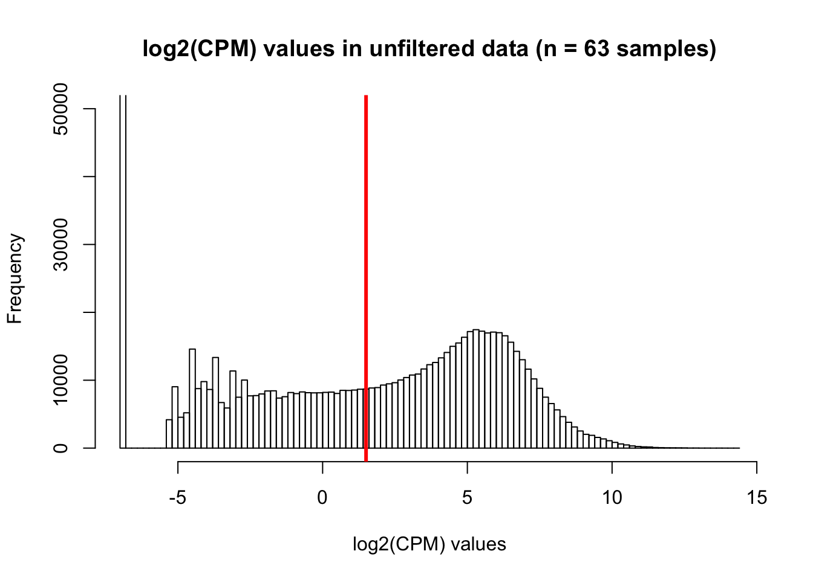
# Filter lowly expressed genes
humans <- c(1:6, 11:16, 21:26, 31:36)
chimps <- c(7:10, 17:20, 27:30, 37:40)
cpm_filtered <- (rowSums(cpm[,humans] > 1.5) > 10 & rowSums(cpm[,chimps] > 1.5) > 10)
genes_in_cutoff_pre <- cpm[cpm_filtered==TRUE,]
dim(genes_in_cutoff_pre)[1] 10174 40Using a cutoff of log2(CPM) > 1.5 in at least half of the human and half of the chimpanzee samples, 10,179 genes remain. In order to compare the two methods, we will use the 10,304 genes from all other analyses.
# Get the gene counts for the 10,304 genes
inshared_lists = row.names(mean_tech_reps_pre) %in% rownames(mean_tech_reps)
inshared_lists_data <- as.data.frame(inshared_lists)
counts_genes_in <- cbind(mean_tech_reps_pre, inshared_lists_data)
counts_genes_in_cutoff_pre <- subset(counts_genes_in, inshared_lists_data == "TRUE")
counts_genes_in_cutoff_pre <- counts_genes_in_cutoff_pre[,1:40]
# Take the TMM of the counts only for the genes that remain after filtering
# Make day-species labels
labels_pre <- c("human 0", "human 0", "human 0", "human 0", "human 0", "human 0", "chimp 0", "chimp 0", "chimp 0", "chimp 0", "human 1", "human 1", "human 1", "human 1", "human 1", "human 1", "chimp 1", "chimp 1", "chimp 1", "chimp 1", "human 2", "human 2", "human 2", "human 2", "human 2", "human 2", "chimp 2", "chimp 2", "chimp 2", "chimp 2", "human 3", "human 3", "human 3", "human 3", "human 3", "human 3", "chimp 3", "chimp 3", "chimp 3", "chimp 3")
dge_in_cutoff_pre <- DGEList(counts=as.matrix(counts_genes_in_cutoff_pre), genes=rownames(counts_genes_in_cutoff_pre), group = as.character(t(labels_pre)))
dge_in_cutoff_pre <- calcNormFactors(dge_in_cutoff_pre)
# Find the cpm
cpm_in_cutoff_pre <- cpm(dge_in_cutoff_pre, normalized.lib.sizes=TRUE, log=TRUE)
# Use voom to perform a cyclic loess normalization
# Make the design matrix
condition <- factor(paste(species,day,sep="."))
design <- model.matrix(~ 0 + condition)
colnames(design) <- gsub("condition", "", dput(colnames(design)))c("conditionC.0", "conditionC.1", "conditionC.2", "conditionC.3",
"conditionH.0", "conditionH.1", "conditionH.2", "conditionH.3"
)cpm.voom <- voom(dge_in_cutoff_pre, design, plot = TRUE, normalize.method="cyclicloess")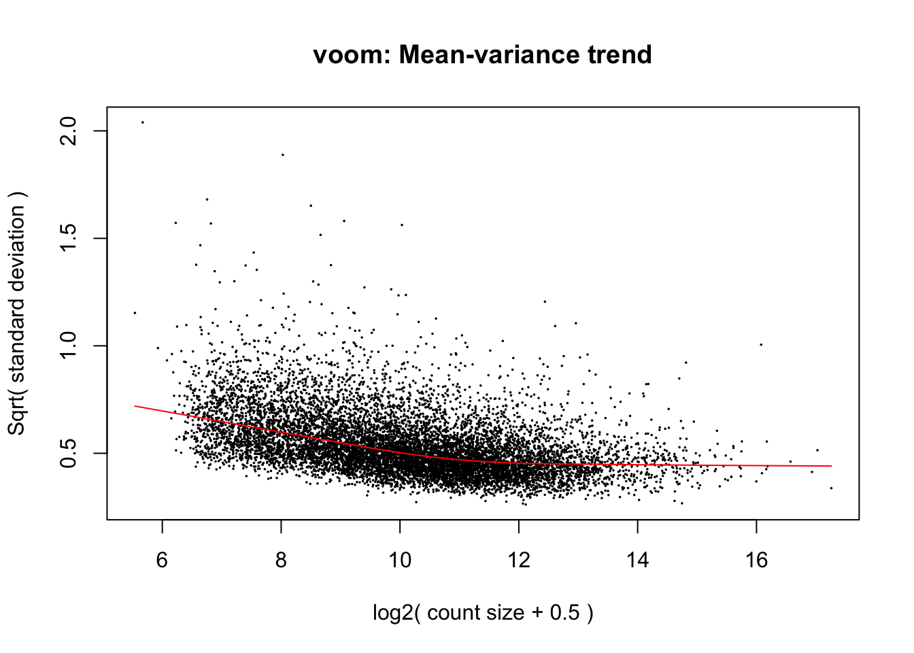
cpm_in_cutoff_pre_cyclic_loess <- cpm.voom$E
# Plot of cpm values
hist(cpm_in_cutoff_pre, xlab = "Log2(CPM)", main = "Log2(CPM) values for genes meeting the filtering criteria", breaks = 100 )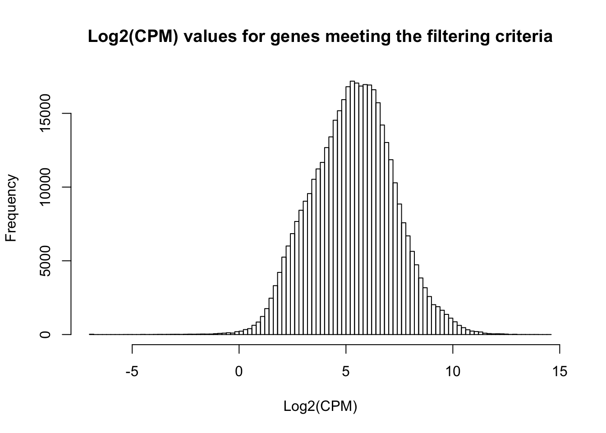
plotDensities(cpm_in_cutoff_pre, col=pal[as.factor(species)])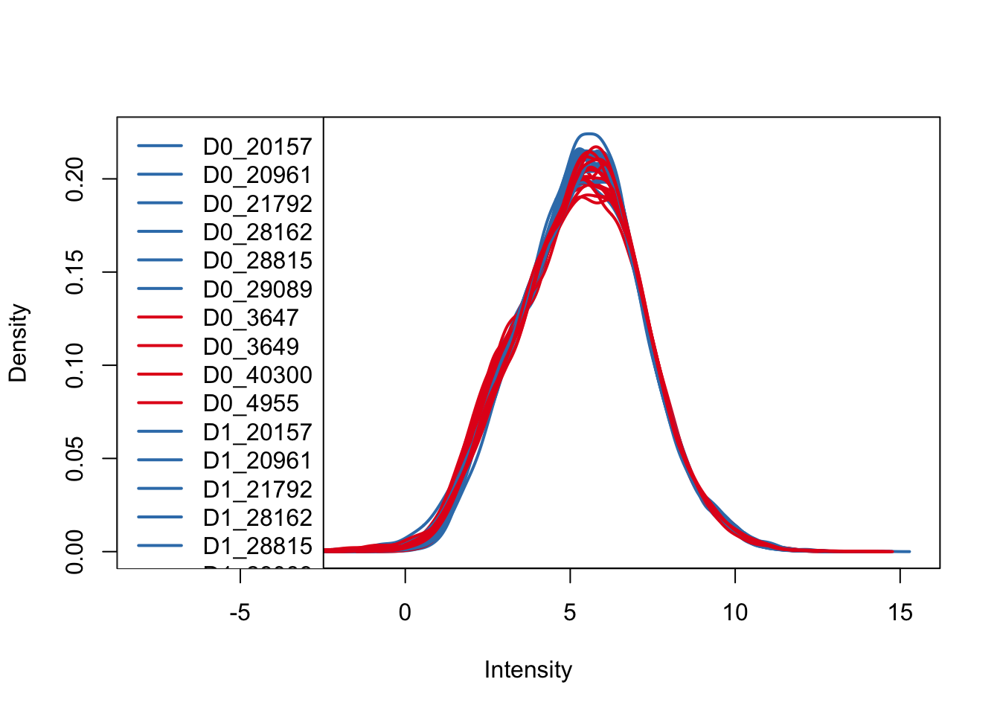
plotDensities(cpm_in_cutoff_pre, col=pal[as.numeric(day)])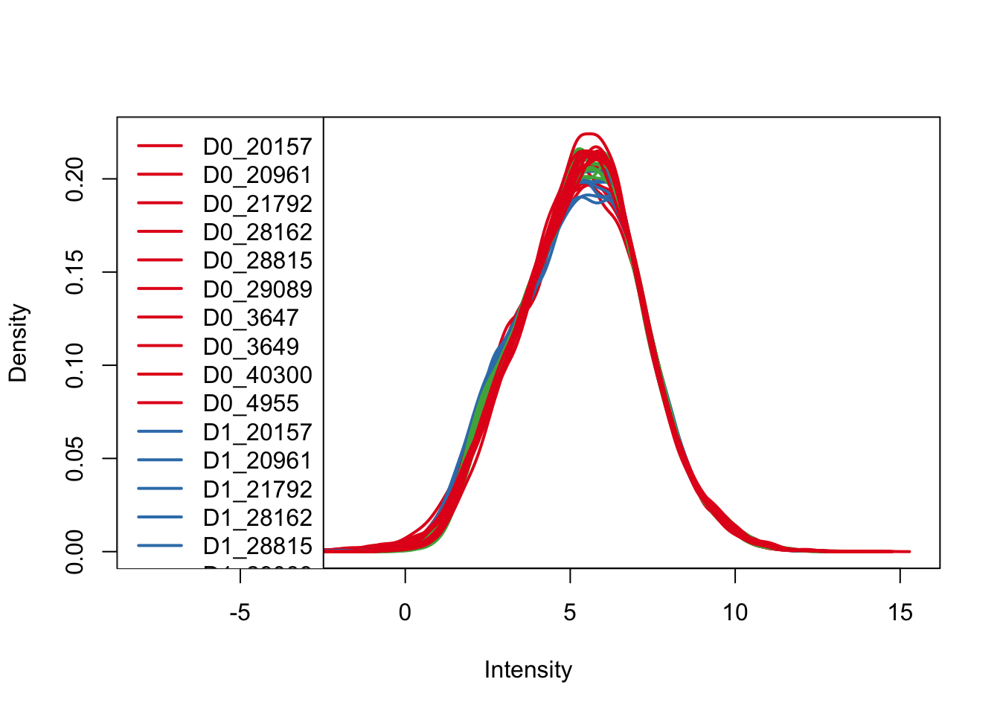
write.table(cpm_in_cutoff_pre_cyclic_loess, file="~/Desktop/Endoderm_TC/ashlar-trial/data/cpm_cyclicloess_40_pre_norm.txt",sep="\t", col.names = T, row.names = T)
# Examine PCs
pca_genes <- prcomp(t(cpm_in_cutoff_pre_cyclic_loess), scale = T, retx = TRUE, center = TRUE)
matrixpca <- pca_genes$x
pc1 <- matrixpca[,1]
pc2 <- matrixpca[,2]
pc3 <- matrixpca[,3]
pc4 <- matrixpca[,4]
pc5 <- matrixpca[,5]
pcs <- data.frame(pc1, pc2, pc3, pc4, pc5)
summary <- summary(pca_genes)
averaged_status <- c(1,1,1,1,2,1,3,3,3,3,2,1,1,1,2,1,3,3,3,3,2,1,1,1,2,1,3,3,3,3,2,1,1,1,2,1,3,3,3,3)
ggplot(data=pcs, aes(x=pc1, y=pc2, color=as.factor(day), shape=as.factor(averaged_status), size=2)) + geom_point(aes(colour = as.factor(day))) + scale_colour_manual(name="Day",
values = c("0"=rgb(239/255, 110/255, 99/255, 1), "1"= rgb(0/255, 180/255, 81/255, 1), "2"=rgb(0/255, 177/255, 219/255, 1),
"3"=rgb(199/255, 124/255, 255/255,1))) + xlab(paste("PC1 (",(summary$importance[2,1]*100),"% of variance)")) + ylab(paste("PC2 (",(summary$importance[2,2]*100),"% of variance)")) + scale_size(guide = 'none') + theme_bw() + ggtitle("PCs 1 and 2 normalized expression with technical replicates summed prior to normalization (n=40)") + scale_shape_discrete(name ="Replicate status", labels = c("Human Single" ,"Human Averaged", "Chimp Averaged")) 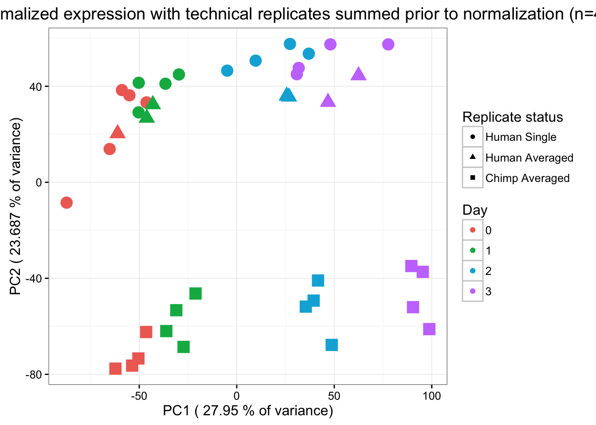
Compare the two methods
# Calculate the Pearson's correlation for each sample
Cor_values = matrix(data = NA, nrow = 40, ncol = 1, dimnames = list(c("human 0", "human 0", "human 0", "human 0", "human 0", "human 0", "chimp 0", "chimp 0", "chimp 0", "chimp 0", "human 1", "human 1", "human 1", "human 1", "human 1", "human 1", "chimp 1", "chimp 1", "chimp 1", "chimp 1", "human 2", "human 2", "human 2", "human 2", "human 2", "human 2", "chimp 2", "chimp 2", "chimp 2", "chimp 2", "human 3", "human 3", "human 3", "human 3", "human 3", "human 3", "chimp 3", "chimp 3", "chimp 3", "chimp 3"), c("Pearson's correlation")))
for (i in 1:40){
Cor_values[i,1] <- cor(mean_tech_reps[,i], cpm_in_cutoff_pre_cyclic_loess[,i])
}
summary(Cor_values) Pearson's correlation
Min. :0.9954
1st Qu.:0.9989
Median :0.9996
Mean :0.9991
3rd Qu.:0.9999
Max. :1.0000 # Day 0 Chimp 3947
plot(mean_tech_reps[,7], cpm_in_cutoff_pre_cyclic_loess[,7], ylab = "Method 1: avg. log2(CPM)", xlab = "Method 2: sum counts then normalize", main = "Combining tech. rep. (Day 0, Chimp Line 3947)")
abline(0,1, col = "red")
var <- "Pearson's r = 0.9965"
text(0, 12, var, pos = 1)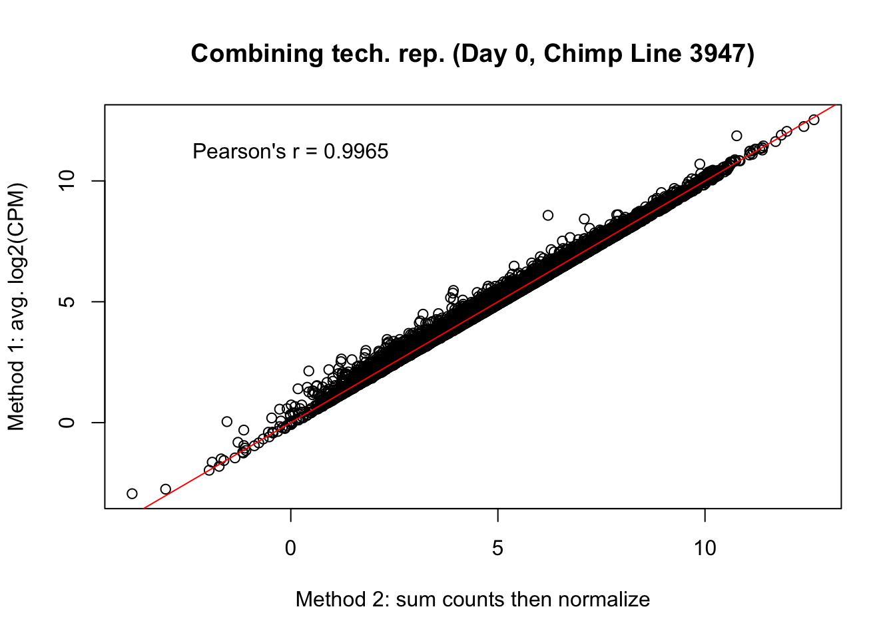
cor(mean_tech_reps[,7], cpm_in_cutoff_pre_cyclic_loess[,7])[1] 0.9965309# Day 0 Chimp 3949
plot(mean_tech_reps[,8], cpm_in_cutoff_pre[,8], ylab = "Method 1: avg. log2(CPM)", xlab = "Method 2: sum counts then normalize", main = "Combining tech. rep. (Day 0, Chimp Line 3949)")
abline(0,1, col = "red")
var <- "Pearson's correlation = 0.9979"
text(0, 12, var, pos = 1)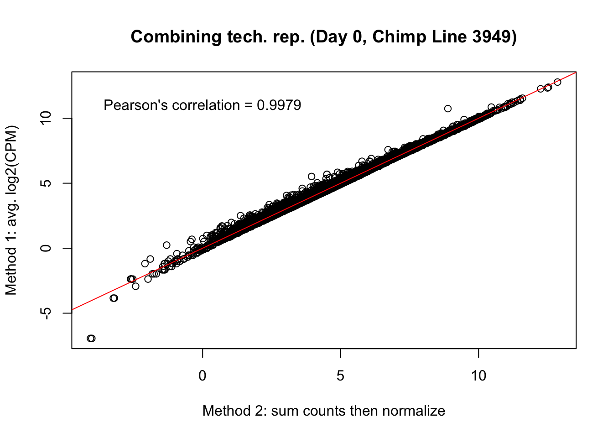
cor(mean_tech_reps[,8], cpm_in_cutoff_pre[,8])[1] 0.9979774# Day 0 Chimp 40300
plot(mean_tech_reps[,9], cpm_in_cutoff_pre[,9], ylab = "Method 1: avg. log2(CPM)", xlab = "Method 2: sum counts then normalize", main = "Combining tech. rep. (Day 0, Chimp Line 40300)")
abline(0,1, col = "red")
var <- "Pearson's correlation = 0.9989"
text(0, 12, var, pos = 1)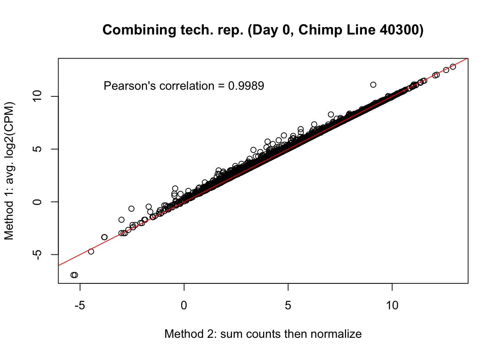
cor(mean_tech_reps[,9], cpm_in_cutoff_pre[,9])[1] 0.9987857# Day 0 Chimp 4955
plot(mean_tech_reps[,10], cpm_in_cutoff_pre[,10], ylab = "Method 1: avg. log2(CPM)", xlab = "Method 2: sum counts then normalize", main = "Combining tech. rep. (Day 0, Chimp Line 4955)")
abline(0,1, col = "red")
var <- "Pearson's correlation = 0.9970"
text(0, 12, var, pos = 1)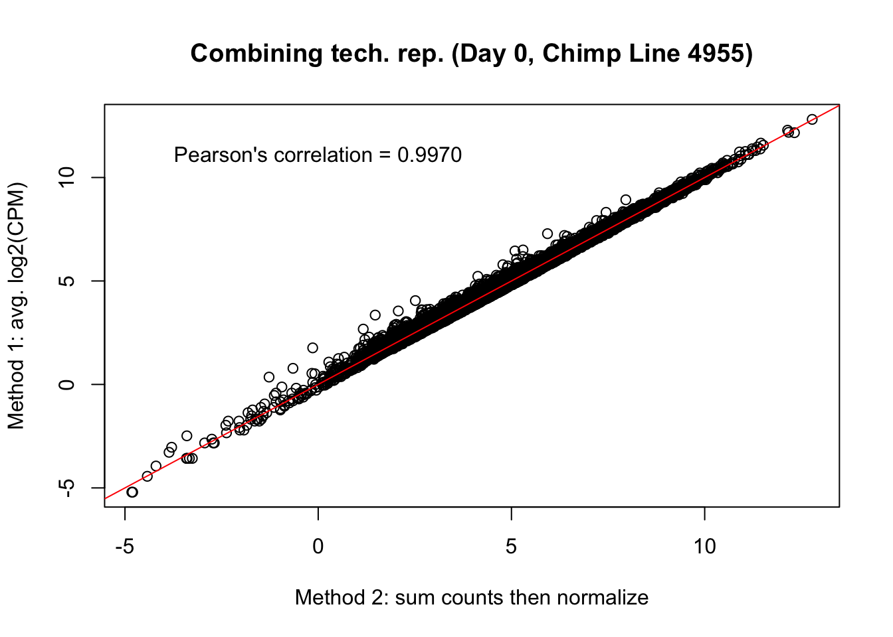
cor(mean_tech_reps[,10], cpm_in_cutoff_pre[,10])[1] 0.9971299# Day 1 Chimp 3947
plot(mean_tech_reps[,17], cpm_in_cutoff_pre[,17], ylab = "Method 1: avg. log2(CPM)", xlab = "Method 2: sum counts then normalize", main = "Combining tech. rep. (Day 1, Chimp Line 3947)")
abline(0,1, col = "red")
var <- "Pearson's correlation = 0.9994"
text(2, 12, var, pos = 1)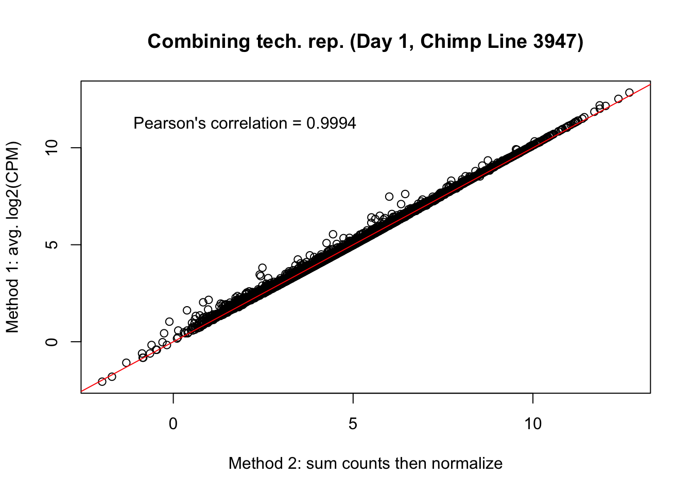
cor(mean_tech_reps[,17], cpm_in_cutoff_pre[,17])[1] 0.9992265# Day 1 Chimp 3949
plot(mean_tech_reps[,18], cpm_in_cutoff_pre[,18], ylab = "Method 1: avg. log2(CPM)", xlab = "Method 2: sum counts then normalize", main = "Combining tech. rep. (Day 1, Chimp Line 3949)")
abline(0,1, col = "red")
var <- "Pearson's correlation = 0.9996"
text(2, 12, var, pos = 1)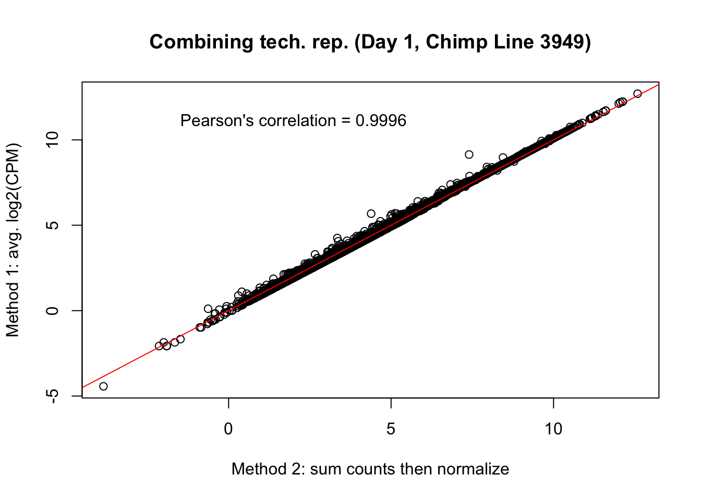
cor(mean_tech_reps[,18], cpm_in_cutoff_pre[,18])[1] 0.9994921# Day 1 Chimp 40300
plot(mean_tech_reps[,19], cpm_in_cutoff_pre[,19], ylab = "Method 1: avg. log2(CPM)", xlab = "Method 2: sum counts then normalize", main = "Combining tech. rep. (Day 1, Chimp Line 40300)")
abline(0,1, col = "red")
var <- "Pearson's correlation = 0.9979"
text(2, 12, var, pos = 1)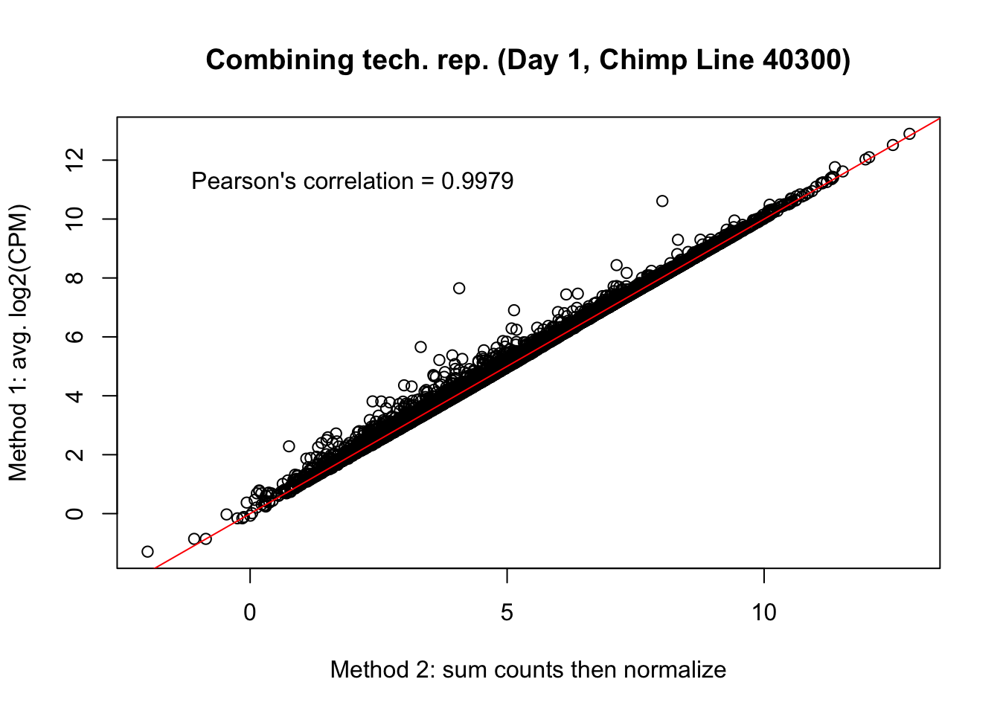
cor(mean_tech_reps[,19], cpm_in_cutoff_pre[,19])[1] 0.9979052# Day 1 Chimp 4955
plot(mean_tech_reps[,20], cpm_in_cutoff_pre[,20], ylab = "Method 1: avg. log2(CPM)", xlab = "Method 2: sum counts then normalize", main = "Combining tech. rep. (Day 1, Chimp Line 4955)")
abline(0,1, col = "red")
var <- "Pearson's correlation = 0.9961"
text(2, 12, var, pos = 1)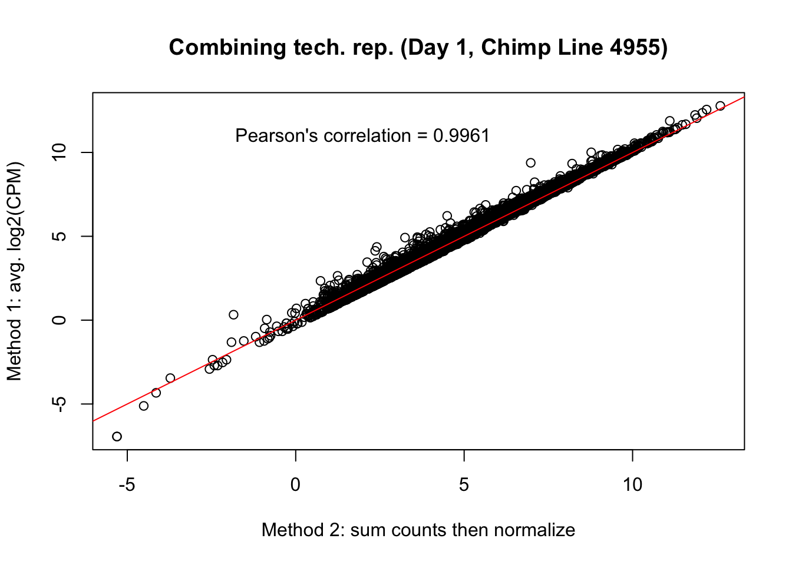
cor(mean_tech_reps[,20], cpm_in_cutoff_pre[,20])[1] 0.9960728# Day 2 Chimp 3947
plot(mean_tech_reps[,27], cpm_in_cutoff_pre[,27], ylab = "Method 1: avg. log2(CPM)", xlab = "Method 2: sum counts then normalize", main = "Combining tech. rep. (Day 2, Chimp Line 3947)")
abline(0,1, col = "red")
var <- "Pearson's correlation = 0.9992"
text(3, 12, var, pos = 1)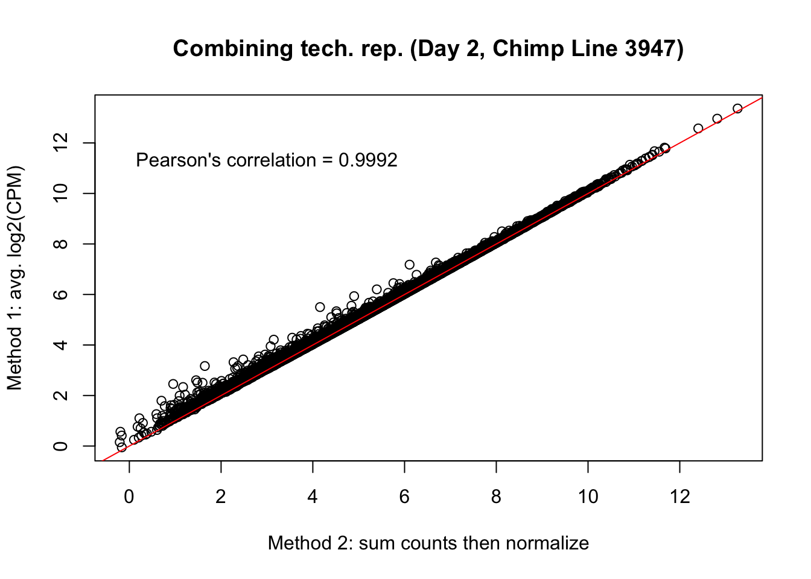
cor(mean_tech_reps[,27], cpm_in_cutoff_pre[,27])[1] 0.9991663# Day 2 Chimp 3949
plot(mean_tech_reps[,28], cpm_in_cutoff_pre[,28], ylab = "Method 1: avg. log2(CPM)", xlab = "Method 2: sum counts then normalize", main = "Combining tech. rep. (Day 2, Chimp Line 3949)")
abline(0,1, col = "red")
var <- "Pearson's correlation = 0.9988"
text(3, 12, var, pos = 1)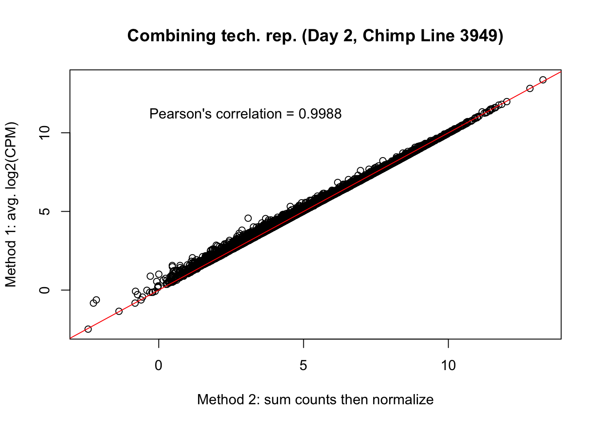
cor(mean_tech_reps[,28], cpm_in_cutoff_pre[,28])[1] 0.998994# Day 2 Chimp 40300
plot(mean_tech_reps[,29], cpm_in_cutoff_pre[,29], ylab = "Method 1: avg. log2(CPM)", xlab = "Method 2: sum counts then normalize", main = "Combining tech. rep. (Day 2, Chimp Line 40300)")
abline(0,1, col = "red")
var <- "Pearson's correlation = 0.9992"
text(3, 12, var, pos = 1)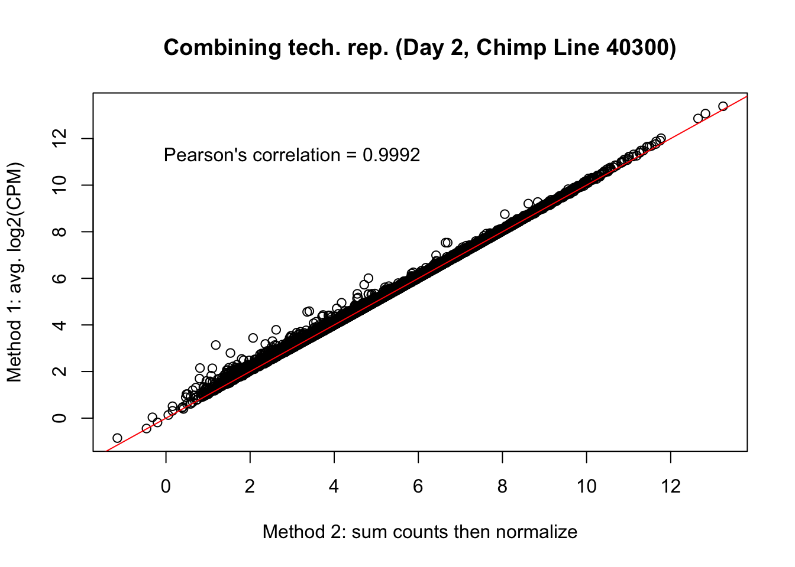
cor(mean_tech_reps[,29], cpm_in_cutoff_pre[,29])[1] 0.9991052# Day 2 Chimp 4955
plot(mean_tech_reps[,30], cpm_in_cutoff_pre[,30], ylab = "Method 1: avg. log2(CPM)", xlab = "Method 2: sum counts then normalize", main = "Combining tech. rep. (Day 2, Chimp Line 4955)")
abline(0,1, col = "red")
var <- "Pearson's correlation = 0.9970"
text(3, 12, var, pos = 1)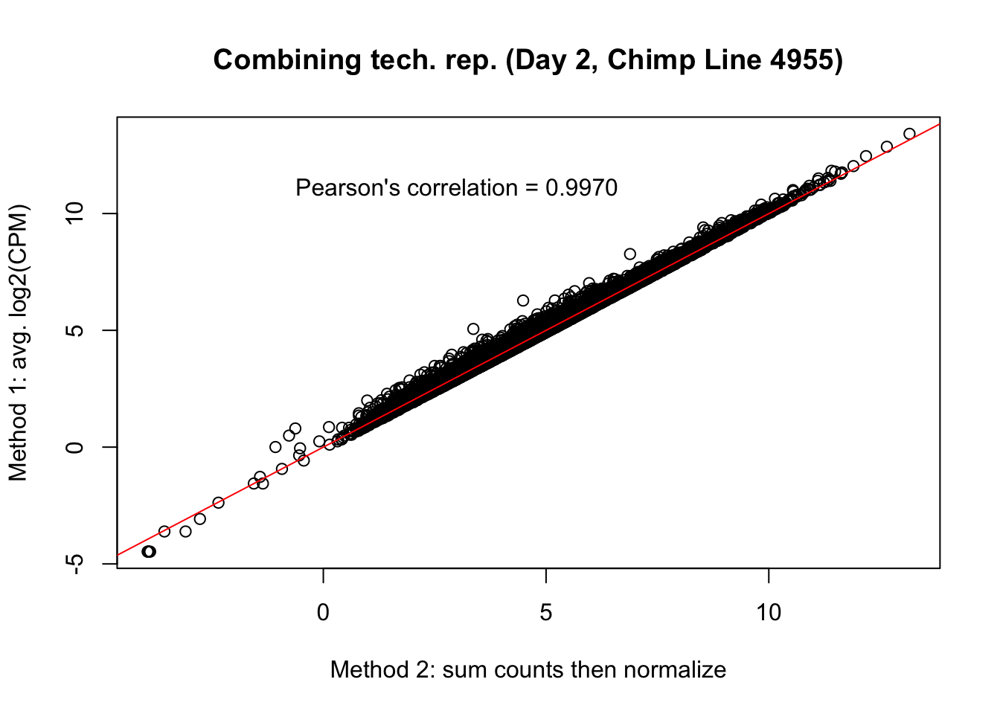
cor(mean_tech_reps[,30], cpm_in_cutoff_pre[,30])[1] 0.997065# Day 3 Chimp 3947
plot(mean_tech_reps[,37], cpm_in_cutoff_pre[,37], ylab = "Method 1: avg. log2(CPM)", xlab = "Method 2: sum counts then normalize", main = "Combining tech. rep. (Day 3, Chimp Line 3947)")
abline(0,1, col = "red")
var <- "Pearson's correlation = 0.9976"
text(2, 12, var, pos = 1)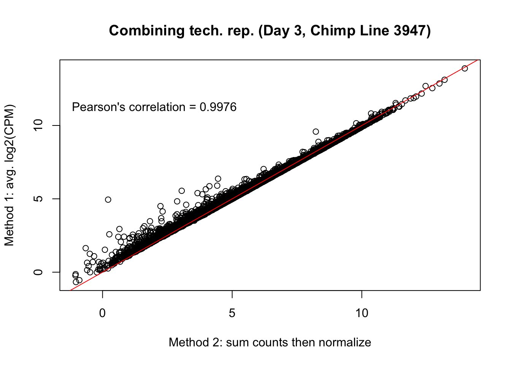
cor(mean_tech_reps[,37], cpm_in_cutoff_pre[,37])[1] 0.9975502# Day 3 Chimp 3949
plot(mean_tech_reps[,38], cpm_in_cutoff_pre[,38], ylab = "Method 1: avg. log2(CPM)", xlab = "Method 2: sum counts then normalize", main = "Combining tech. rep. (Day 3, Chimp Line 3949)")
abline(0,1, col = "red")
var <- "Pearson's correlation = 0.9940"
text(2, 12, var, pos = 1)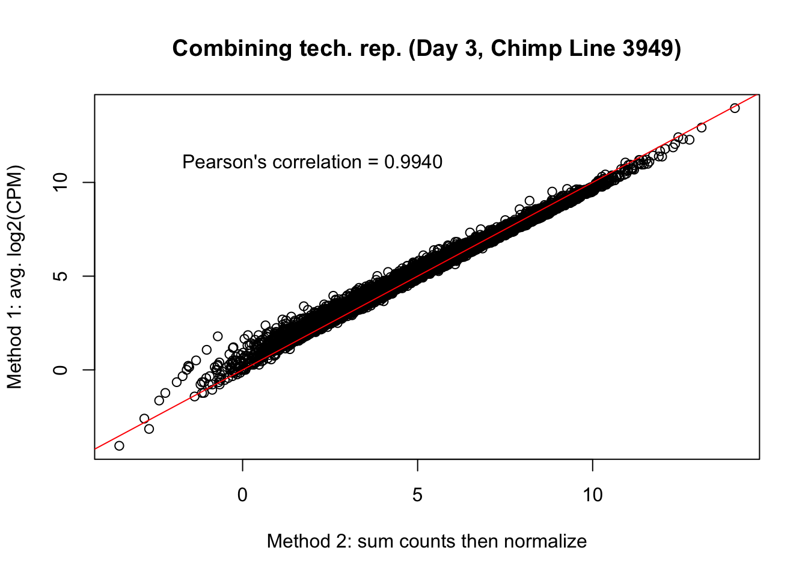
cor(mean_tech_reps[,38], cpm_in_cutoff_pre[,38])[1] 0.9953473# Day 3 Chimp 40300
plot(mean_tech_reps[,39], cpm_in_cutoff_pre[,39], ylab = "Method 1: avg. log2(CPM)", xlab = "Method 2: sum counts then normalize", main = "Combining tech. rep. (Day 3, Chimp Line 40300)")
abline(0,1, col = "red")
var <- "Pearson's correlation = 0.9991"
text(2, 12, var, pos = 1)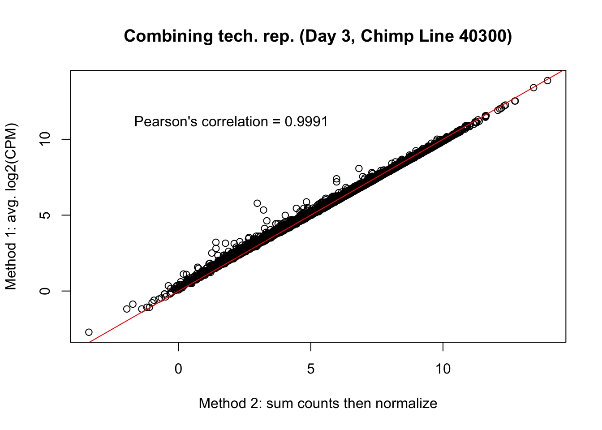
cor(mean_tech_reps[,39], cpm_in_cutoff_pre[,39])[1] 0.998971# Day 3 Chimp 4955
plot(mean_tech_reps[,40], cpm_in_cutoff_pre[,40], ylab = "Method 1: avg. log2(CPM)", xlab = "Method 2: sum counts then normalize", main = "Combining tech. rep. (Day 3, Chimp Line 4955)")
abline(0,1, col = "red")
var <- "Pearson's correlation = 0.9989"
text(2, 12, var, pos = 1)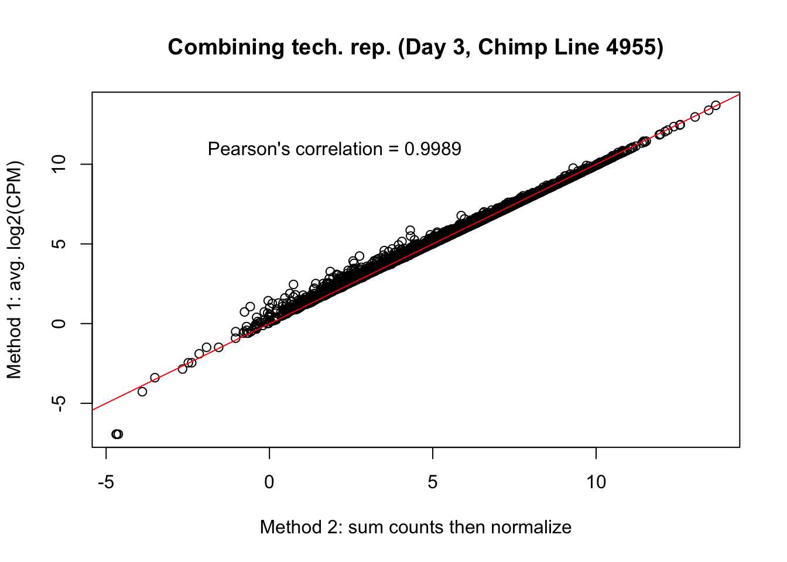
cor(mean_tech_reps[,40], cpm_in_cutoff_pre[,40])[1] 0.9986006# Day 0 Human 28815
plot(mean_tech_reps[,5], cpm_in_cutoff_pre[,5], ylab = "Method 1: avg. log2(CPM)", xlab = "Method 2: sum counts then normalize", main = "Combining tech. rep. (Day 0, Human Line 28815)")
abline(0,1, col = "red")
var <- "Pearson's correlation = 0.9997"
text(0, 10, var, pos = 1)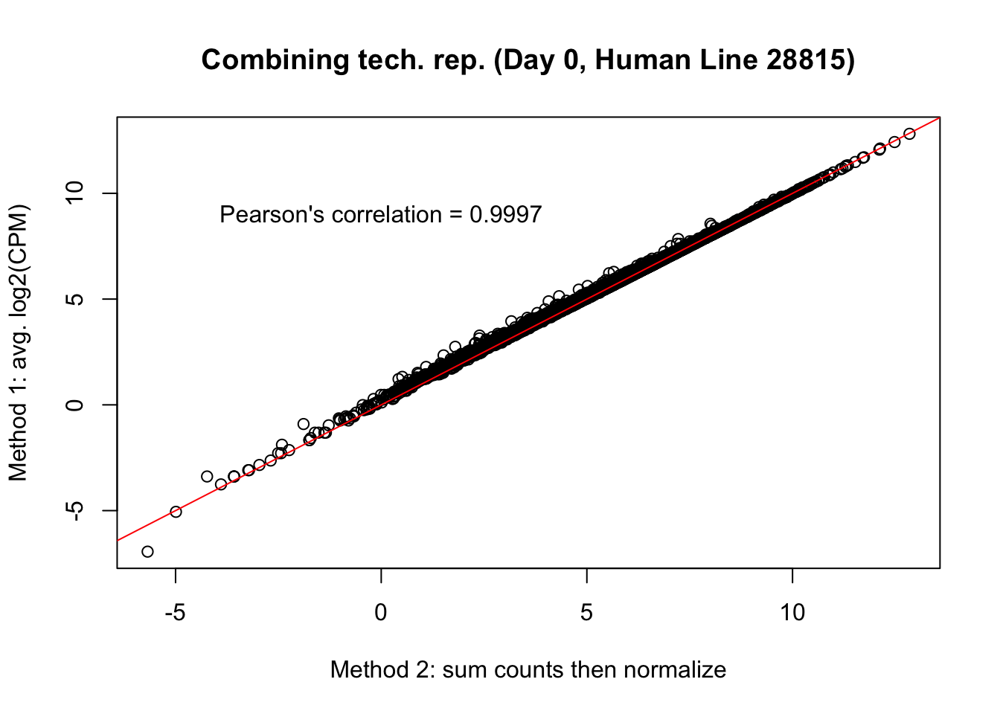
cor(mean_tech_reps[,5], cpm_in_cutoff_pre[,5])[1] 0.9995542# Day 1 Human 20157
plot(mean_tech_reps[,11], cpm_in_cutoff_pre[,11], ylab = "Method 1: avg. log2(CPM)", xlab = "Method 2: sum counts then normalize", main = "Combining tech. rep. (Day 1, Human Line 20157)")
abline(0,1, col = "red")
var <- "Pearson's correlation = 0.9998"
text(0, 10, var, pos = 1)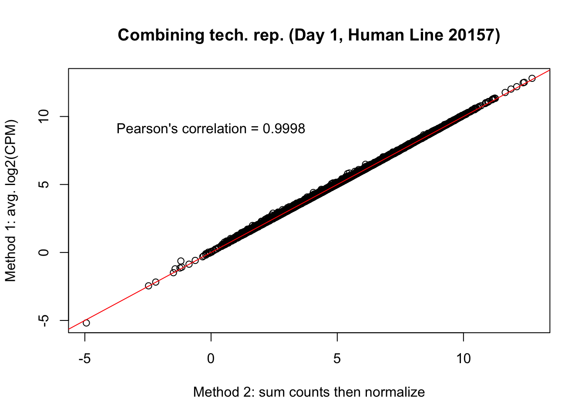
cor(mean_tech_reps[,11], cpm_in_cutoff_pre[,11])[1] 0.9998264# Day 1 Human 28815
plot(mean_tech_reps[,15], cpm_in_cutoff_pre[,15], ylab = "Method 1: avg. log2(CPM)", xlab = "Method 2: sum counts then normalize", main = "Combining tech. rep. (Day 1, Human Line 28815)")
abline(0,1, col = "red")
var <- "Pearson's correlation = 0.9999"
text(-1, 10, var, pos = 1)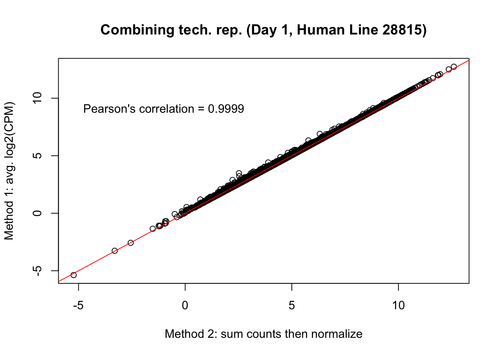
cor(mean_tech_reps[,15], cpm_in_cutoff_pre[,15])[1] 0.9998606# Day 2 Human 20157
plot(mean_tech_reps[,21], cpm_in_cutoff_pre[,21], ylab = "Method 1: avg. log2(CPM)", xlab = "Method 2: sum counts then normalize", main = "Combining tech. rep. (Day 2, Human Line 20157)")
abline(0,1, col = "red")
var <- "Pearson's correlation = 0.9996"
text(0, 10, var, pos = 1)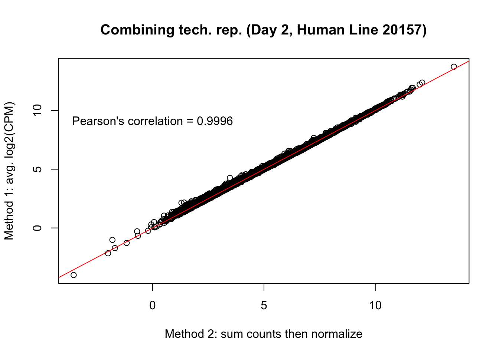
cor(mean_tech_reps[,21], cpm_in_cutoff_pre[,21])[1] 0.9993741# Day 2 Human 28815
plot(mean_tech_reps[,25], cpm_in_cutoff_pre[,25], ylab = "Method 1: avg. log2(CPM)", xlab = "Method 2: sum counts then normalize", main = "Combining tech. rep. (Day 2, Human Line 28815)")
abline(0,1, col = "red")
var <- "Pearson's correlation = 0.9988"
text(0, 10, var, pos = 1)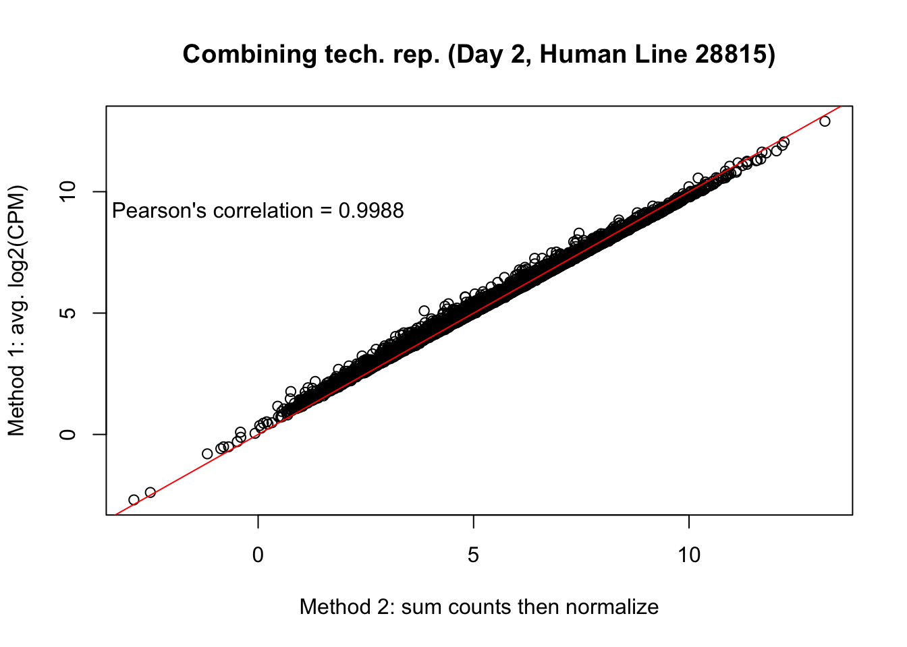
cor(mean_tech_reps[,25], cpm_in_cutoff_pre[,25])[1] 0.998588# Day 3 Human 20157
plot(mean_tech_reps[,31], cpm_in_cutoff_pre[,31], ylab = "Method 1: avg. log2(CPM)", xlab = "Method 2: sum counts then normalize", main = "Combining tech. rep. (Day 3, Human Line 20157)")
abline(0,1, col = "red")
var <- "Pearson's correlation = 0.9991"
text(0, 10, var, pos = 1)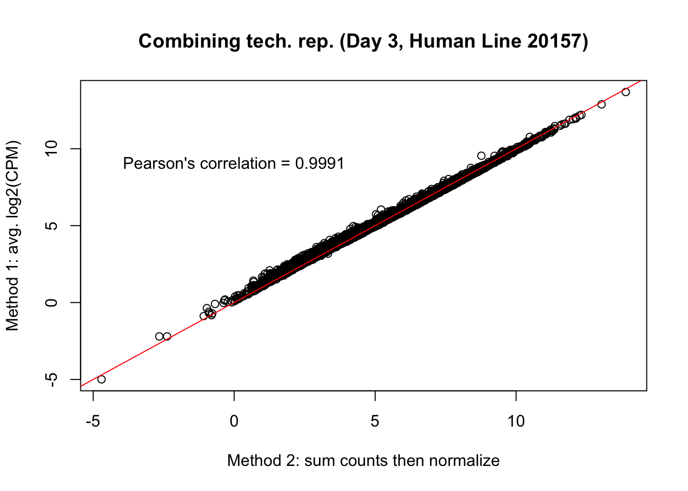
cor(mean_tech_reps[,31], cpm_in_cutoff_pre[,31])[1] 0.9989673# Day 3 Human 28815
plot(mean_tech_reps[,36], cpm_in_cutoff_pre[,36], ylab = "Method 1: avg. log2(CPM)", xlab = "Method 2: sum counts then normalize", main = "Combining tech. rep. (Day 3, Human Line 28815)")
abline(0,1, col = "red")
var <- "Pearson's correlation = 0.99999"
text(0, 10, var, pos = 1)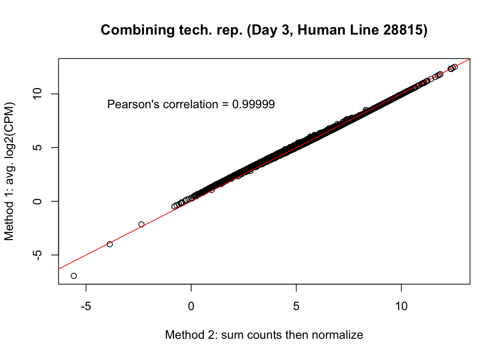
cor(mean_tech_reps[,36], cpm_in_cutoff_pre[,36])[1] 0.9992846Testing for robustness of the main results in the analysis of variance section
# Reduction Day 0 to 1 chimps
chimp_var_pval <- array(NA, dim = c(10304, 1))
for(i in 1:10304){
x <- t(cpm_in_cutoff_pre_cyclic_loess[i,7:10])
y <- t(cpm_in_cutoff_pre_cyclic_loess[i,17:20])
htest <- var.test(x, y, alternative = c("greater"))
chimp_var_pval[i,1] <- htest$p.value
}
rownames(chimp_var_pval) <- rownames(mean_tech_reps)
length(which(chimp_var_pval < 0.05))[1] 677chimp_red_01 <- as.data.frame(chimp_var_pval[which(chimp_var_pval < 0.05), ])
dim(chimp_red_01)[1] 677 1# Reduction Day 0 to 1 humans
human_var_pval <- array(NA, dim = c(10304, 1))
for(i in 1:10304){
x <- t(cpm_in_cutoff_pre[i,1:6])
y <- t(cpm_in_cutoff_pre[i,11:16])
htest <- var.test(x, y, alternative = c("greater"))
human_var_pval[i,1] <- htest$p.value
}
rownames(human_var_pval) <- rownames(mean_tech_reps)
length(which(human_var_pval < 0.05))[1] 2257human_red_01 <- as.data.frame(human_var_pval[which(human_var_pval < 0.05), ])
dim(human_red_01)[1] 2257 1# Increase Day 1 to 2 chimps
chimp_var_pval <- array(NA, dim = c(10304, 1))
for(i in 1:10304){
x <- t(cpm_in_cutoff_pre[i,17:20])
y <- t(cpm_in_cutoff_pre[i,27:30])
htest <- var.test(x, y, alternative = c("less"))
chimp_var_pval[i,1] <- htest$p.value
}
rownames(chimp_var_pval) <- rownames(mean_tech_reps)
length(which(chimp_var_pval < 0.05))[1] 439chimp_inc_12 <- as.data.frame(chimp_var_pval[which(chimp_var_pval < 0.05), ])
dim(chimp_inc_12)[1] 439 1# Increase Day 1 to 2 humans
human_var_pval <- array(NA, dim = c(10304, 1))
for(i in 1:10304){
x <- t(cpm_in_cutoff_pre[i,11:16])
y <- t(cpm_in_cutoff_pre[i,21:26])
htest <- var.test(x, y, alternative = c("less"))
human_var_pval[i,1] <- htest$p.value
}
rownames(human_var_pval) <- rownames(mean_tech_reps)
length(which(human_var_pval < 0.05))[1] 1888human_inc_12 <- as.data.frame(human_var_pval[which(human_var_pval < 0.05), ])
dim(human_inc_12)[1] 1888 1Conclusion: The number of significant genes is approximately the same as the main results in the analysis of variance section.